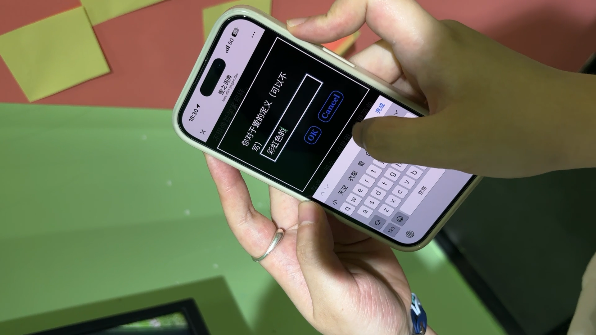
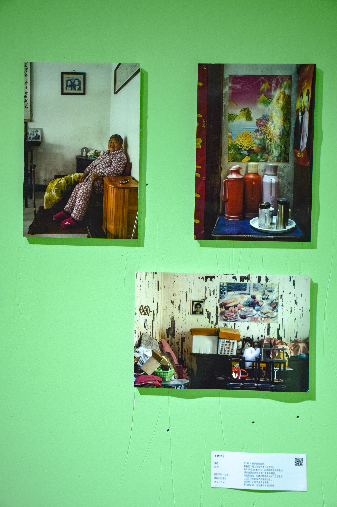
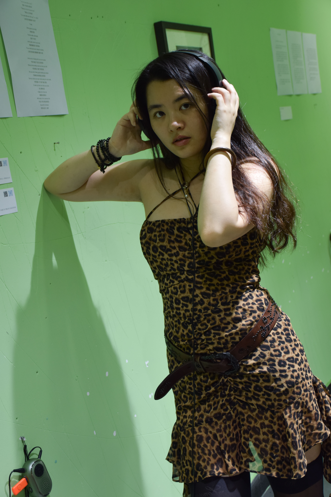
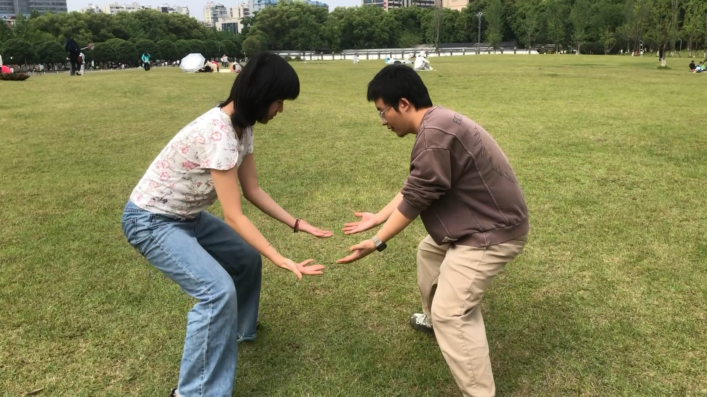
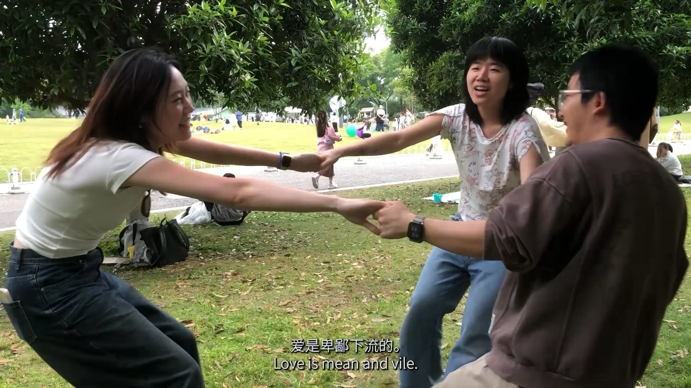
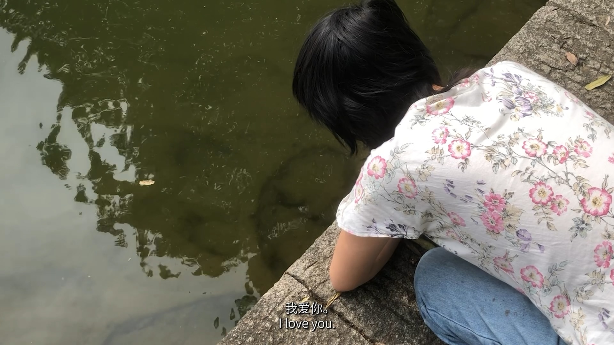
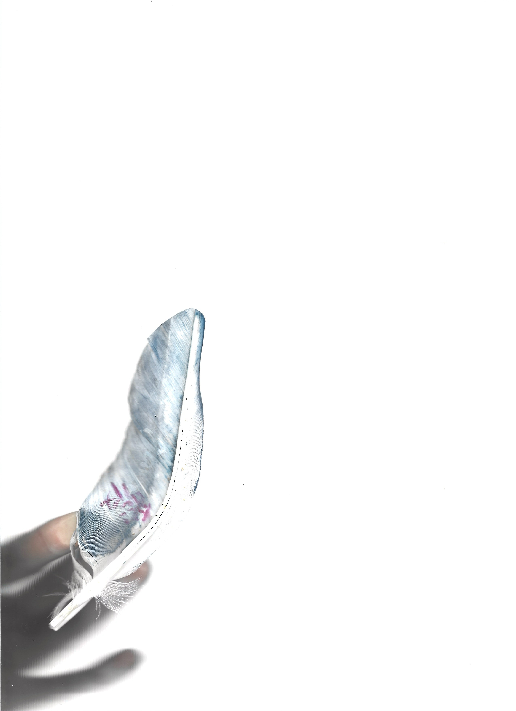
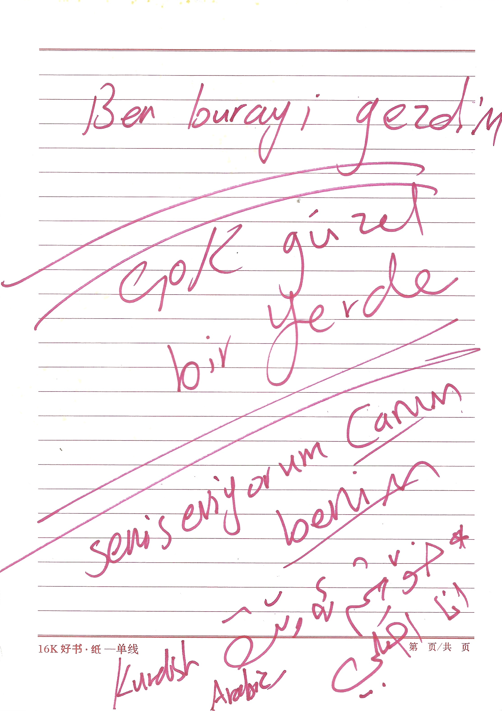
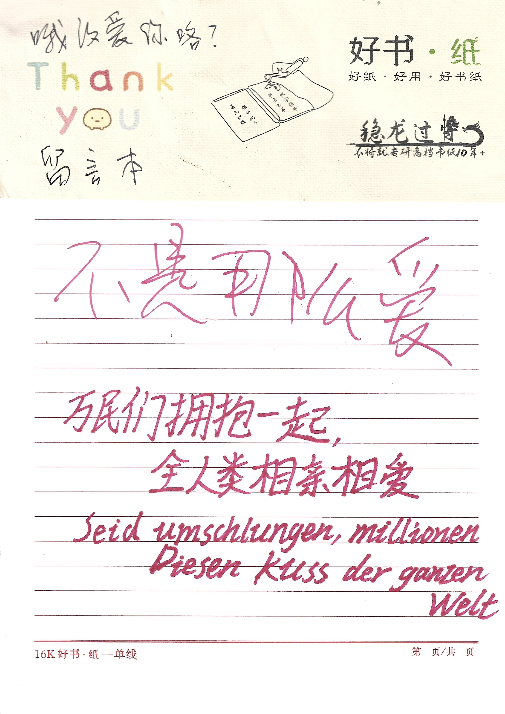

Exhibition Information
Project Overview
Ógai Love Ù is a curator-led group exhibition developed in response to an invitation from 1/2 Space. The project begins with the Changsha dialect phrase “哦改爱你咯?” (Ógǎi ài nǐ lo?) — a sentence that can be translated in different ways depending on its tone:
“How should I love you?”
“Isn’t this already love?”
“Then tell me, how exactly should I love you?”
The exhibition explores forms of love that are not smoothly received: love that is excessive, clumsy, sincere, awkward, self-righteous, defensive, or difficult to respond to. Rather than presenting love as an idealised or harmonious emotion, the project focuses on how love is transformed through language, memory, sound, image, bodily action, everyday objects, and public participation.
Bringing together painting, photography, sound, poetry, interactive text, ceramics, music, and performance video, the exhibition constructed an emotional field in which love appeared as a question, a misunderstanding, a gesture, a rhythm, a transmission, and sometimes a failed attempt to be understood.
My Role
I proposed the exhibition concept based on the Changsha dialect phrase “哦改爱你咯?”, invited Zhenyu Wu to co-organise the project, and brought together artists whose practices resonated with the themes of love, language, misunderstanding, memory, sound, and bodily experience.
My responsibilities included concept development, curatorial writing, artist invitation and communication, artwork text editing, exhibition narrative development, opening program planning, and participation as an artist in three single-channel performance videos.
Curatorial Approach
My curatorial approach was to transform a Changsha dialect phrase into an exhibition structure. “哦改爱你咯?” was treated not simply as a sentence meaning “How should I love you?”, but as a shifting emotional position that could sound sincere, aggrieved, tender, impatient, or defensive.
Rather than organising the exhibition by medium, I brought together works through emotional resonance: confession, misunderstanding, repetition, desire, self-deception, family memory, naming, and bodily transmission. The exhibition included sound, photography, painting, poetry, interactive text, ceramics, music, and performance video.
The opening program extended this structure into a participatory situation. Through drawing, sound improvisation, and Cupid’s Jianzi, love became something to be voiced, drawn, carried, passed on, missed, and collectively produced.
Exhibition Views

Opening of Ógai Love Ù, with participating artists and the curatorial team, 1/2 Space, Changsha, 2026.

Installation view with Miao’s Love Dictionary（爱的词典）, 2026. Interactive text program, Ógai Love Ù, 1/2 Space, Changsha.

Installation view with Wei Sun’s 1959, 2026. Photography series, Ógai Love Ù, 1/2 Space, Changsha.

Installation view with Lai Tangyuan’s Heart or Spine, 2022. Trip hop, 1'54", Ógai Love Ù, 1/2 Space, Changsha.

Installation view with Shucen Liu’s I Love You（我爱你）, 2026. ingle-channel performance video, 1'37", Ógai Love Ù, 1/2 Space, Changsha.

Installation view with Guzi’s Self-Proof（自证）, 2021, oil painting; Zhou Huisu’s Namaste, 2026, solid oil paint on paper; and Lai Tangyuan’s Mal(窟), 2024, sample music, 1'34". Ógai Love Ù, 1/2 Space, Changsha.
Opening Program


Pure Love Live — Drawing Improvisation（纯爱现场-绘画即兴）
Participatory Drawing / Opening Event
As part of Pure Love Live, drawing materials were prepared on site, inviting visitors to draw the shapes of love they felt in the moment.
The activity transformed drawing into an immediate and collective response to the exhibition. Rather than treating love as a fixed image or concept, participants were invited to translate fleeting emotions, memories, and bodily sensations into lines, marks, and forms.

Pure Love Live — Sound Improvisation（纯爱现场-声音即兴）
Live Music / Reading / Voice / Improvisation
Pure Love Live also included an improvised sound performance with guitar and other instruments. Visitors were invited to read, sing, or share sentences, while the musicians responded to their voices through live accompaniment.
The event created a temporary situation in which voice, text, music, and emotion met in real time. Spoken words and personal fragments were not presented as finished performances, but were carried, supported, and transformed through sound.

Cupid’s Jianzi（丘比特之毽）
Participatory Game / Bodily Interaction
Cupid’s Jianzi invited visitors to play jianzi together during the opening. The simple action of kicking, passing, catching, missing, and restarting became a playful metaphor for the circulation of love.
One may catch love, or fail to catch it. Yet the act of passing continues.
Performance Videos

爱山 (Mountain of Love), Single-channel performance video, 1'37"
Love can be weightless, or as heavy as a mountain. We imagined the weight of love and carried it through the crowd.
Shucen Liu，Zhenyu Wu
Changsha
May 2026

爱是 (Love Is), Single-channel performance video, 2'36"
In the instinctive act of pulling and resisting, we each blurt out different definitions of love.
Shucen Liu, Zhenyu Wu, Linyu Liao
Changsha
May 2026

我爱你 (I Love You), Single-channel performance video, 1'37"
To love everything and everyone —
ógǎi love you!
Shucen Liu
Changsha
May 2026
Participating Artists
Shengteng Zhang（张胜腾）
Shengteng Zhang is based between Xi’an and Berlin. His works have been selected by new music festivals in Berlin, Witten, Salzburg and other cities, and have been premiered by contemporary ensembles including MusikFabrik and IEMA. His practice spans sound, installation and theatre, with a focus on interdisciplinary approaches to composition.
A Piece for ** / Apology Piece
《给**的曲子（道歉曲）》
2023
Popular music, 5'14"
The work begins with a repeated emotional exchange: falling in love, confessing, asking for a response, receiving an evasive answer, complaining, apologising, and repeating the cycle again. Music becomes the artist’s most precise language for expression — written in D major, with flowing textures, subtle noise, collage, and contrast.
Wei Sun（孙薇）
Wei Sun studied filmmaking in France and now works as an independent image-maker. Her practice uses images as a way to observe everyday life.
1959
《1959》
2026
Photography series, three prints
Inkjet print on white paper
29.7 × 21 cm each
In the home of 88-year-old Shu Liurong, the artist encountered a black-and-white wedding photograph from 1959. The work traces fragments of marriage, memory and forgetting through the image of Shu and her husband Ding Qitao, and through her recollection of a red-painted wooden wedding bed that cost 60 yuan.
Guzi（谷子）
Guzi describes themself as a wanderer.
Self-Proof
《自证》
2021
Oil painting
60 × 50 cm
Huisu Zhou（周卉稣）
Born in Ningbo, Zhejiang in 1993, Huisu Zhou currently lives and works in Changsha. She graduated from the Department of Mural Painting at Sichuan Conservatory of Music, Chengdu Academy of Fine Arts in 2016. Her practice explores the supercritical solidification of matter, emotion and time, working across oil painting, casein tempera, wax, pastel and digital image.
Swimming on a Tropical Island
《在热带岛屿游泳》
2026
Solid oil paint on paper
10 × 15 cm
When the rational self and the morally observing superego disappear into darkness, the naked body emerging from deep green waves appears as the id: a raw, chaotic and unregulated life impulse.
Namaste
《Namaste》
2026
Solid oil paint on paper
13.5 × 19.5 cm
Through dreamlike colours and flowing brushstrokes, the work constructs a surreal crossing point between reality and illusion. It explores time, memory and belonging through colour and symbolic imagery, inviting viewers to search for their own spiritual threshold within shifting light and shadow.
Miao
Miao is a punk philosopher who lives dangerously.
Love Dictionary
《爱的词典》
2026
Interactive text program / Twine-based HTML game
Love Dictionary is an interactive HTML text game built with Twine. The work invites viewers to move through a fragmented textual structure in which love, language, choice and uncertainty unfold through interaction.
Menglong Shen（申孟珑）
Menglong Shen was born in 1984 in Wangmu Village, Shashi, Shaodong, Hunan. His practice spans oil painting, installation, video and other media. His works have been collected by institutions including the Li Zijian Art Museum, as well as private collectors.
Heart of Iron and Stone
《铁石心肠》
2021
Iron sheet, stone, spray paint, glue
60 × 50 cm
Lu Yi（鲁一）
“I am Lu Yi. These are poems I wrote in 2021. Later, I felt that my poems became better year by year.”
Fervent Fish
《热烈的鱼》
2021
Poetry
Huhu（糊糊）
Huhu is a curator and the founder of Beiwang Handmade. Her practice explores the connections between time, nature, craft and human experience.
Long Nose
《长鼻子》
2025–2026
Clay
90 × 20 cm
Set of ceramic cups
A group of ceramic cups with noses of different colours, shapes and lengths. They resemble the lies the artist once repeatedly told herself. To be honest with oneself sounds simple — the work asks what happens when one actually tries.
Wenbo / Abe（文博）
Abe is the guitarist and vocalist of the band Keep Talking. He also writes texts.
Poem on a Full Moon Night
《满月夜晚的诗》
2026
Text work
Zeilaman（贼拉曼）
In one regional dialect, “Zhe La Man” means “particularly slow”; in another language, it means “this is the hand.” You may find them in the gap between different linguistic realities. Or perhaps you may not find them at all.
What Is Your Name?
《What Is Your Name?》
2026
Sound work
1'07"
Lai Tangyuan（赖汤圆）
Lai Tangyuan constructs a mythological and bodily world between madness and normality, divinity and animality, pain and desire. In their music, love appears as poison, hunger, enslavement and transformation.
Heart or Spine?
《Heart or Spine?》
2022
Trip hop
1'54"
A voluntary submission to love, followed by the violent desire to kill the master when love remains unsatisfied. May the miracle never leave your body.
Mal
《窟》
2024
Sample music
1'34"
A serpent’s nest. In the artist’s favourite weather, two heads meet; in their mutual gaze, they sustain an eternal dream.
Shucen Liu（刘书岑）, Zhenyu Wu（吴振宇） and Linyu Liao
Mountain of Love, Love Is, I Love You
《爱山》《爱是》《我爱你》
2026
Single-channel performance video
Presented a series of three single-channel performance videos as part of the exhibition. The works are documented in the Performance Videos section above.
Notes & Moments
Guestbook
Selected pages from the exhibition guestbook, documenting visitors’ handwritten responses, comments, and traces of presence.


